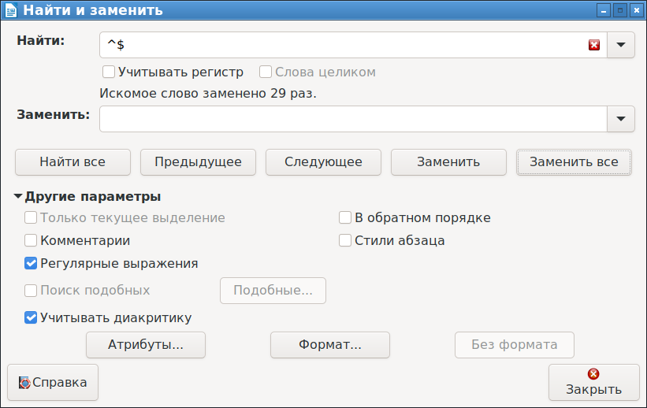

В редакторе Kate/KWrite имеется режим замены последовательностей символов в тексте. Казалось бы, его можно использовать для того, чтобы удалять пустые строки из текста. Но проблема в том, что такой функционал в Kate/KWrite просто не предусмотрен.
Например, если выбрать поиск регулярных выражений, в строке поиска ввести ^$, а строку замены оставить пустой, то при нажатии "Заменить все" ничего не произойдет. Да, пустые строки будут найдены, но Kate/KWrite считает, что пустая строка - это эквивалент отсутствия строки, и не будет удалять пустую строку. Как обойти эту проблему?
По сути, никак. Единственная возможность - это воспользоваться другими программами. Можно поиграться с консольными командами, вариантов на самом деле множество - и sed, и perl и tr и чего там только нет. Но если не хочется заморачиваться с консолью, удаление пустых строк можно сделать через LibreOffice/OpenOffice.
Внимание! Метод удаления пустых строк в Kate таки существует. См. обновление данной статьи далее по тексту.
Вначале в редакторе Kate/KWrite необходимо скопировать нужный фрагмент текста в буфер обмена. Затем в LibreOffice/OpenOffice необходимо вставить данный текст так, чтобы не "съедались" пробелы в начале строк (это требуется, например для форматированного отступами кода). Такой режим вставки вызывается в консольном меню "Вставить как" - "Только текст".
Затем в LibreOffice/OpenOffice выбирается пункт меню "Найти и заменить" (Ctrl+H).

В открывшемся окне надо установить галку "Регулярные выражения", и в поле "Найти" надо ввести уже знакомый шаблон поиска ^$. Поле "Заменить" необходимо оставить пустым. После чего следует нажать кнопку "Заменить все" (для глобального удаления пустых строк) или "Заменить" (для выборочного удаления пустых строк).
Этот режим по своей сути полностью эквивалентен такому же режиму в Kate/KWrite, отличие состоит только в том, что пустые строки будут удаляться.
После удаления пустых строк, текст выделяется, копируется и вставляется обратно в Kate/KWrite.
Да, такой метод совершенно неудобный, зато предельно простой и понятный даже для начинающих пользователей ОС Linux.
UPD спустя месяц
Алекс - Юстасу. Секретный метод поиска и замены пустых строк в редакторе Kate следующий. Метод основан на том, что в регулярных выражениях есть два очень близких понятия: "конец строки" и "перевод строки". Конец строки обозначается символом $, а перевод строки - так же как и в традиционных языках программирования - символами \n. Для удаления пустой строки нужно искать не пустые строки, содержащие начало строки и сразу конец строки, а пустые строки, содержащие начало строки и сразу перевод строки.
Таким образом, для удаления пустых строк в Kate, надо в панели поиска/замены текста перейти в режим "Регулярное выражение". В поле "Искать" надо ввести символы ^\n, а поле "Заменить на" оставить пустым. С такими настройками пустые строки будут удалены.